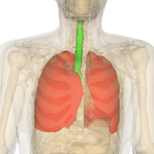

Step5: Zoom in specified organs
Output of the sample code

Zoom in specified organs (lung and bronchus) to see details.
When multiple organs are selected, the region including all the organs is zoomed in.
Explanation of the sample code
See also Javadoc for details of each methods.
line 30： Zoom in a lung
line 36： Zoom in a bronchus
Related properties of AgOrgan
Property
|
Description
|
Default value
|
Setter example |
Zoom in flag
|
Set the organ to zoom in.
When multiple organs are specified, the region including all the organs is zoomed in.
|
Nothing(=setFocusOn(0)) |
setFocusOn(1) |
Sample code
1 import jp.dbcls.ag.AgClient;
2 import jp.dbcls.ag.AgOrgan;
3 import jp.dbcls.ag.AgProp;
4
5 import java.util.ArrayList;
6
7 /**
8 * Step5 指定した臓器(肺、気管）を拡大フォーカス表示する。
9 */
10 public class Step5 {
11 static AgProp prop = null;
12
13 static ArrayList organs = null;
14
15 public static void main(String[] args) throws Exception {
16 prop = new AgProp();
17
18 organs = new ArrayList();
19 AgOrgan o;
20
21 /** 全身（全臓器）を背景として描画する **/
22 o = new AgOrgan();
23 o.setName("body"); // 全身（全臓器）
24 o.setOpacity(0.2);
25 organs.add(o);
26
27 /** 肺と気管を拡大フォーカス指定する **/
28 o = new AgOrgan();
29 o.setName("lung"); // 肺
30 o.setFocusOn(1); // 拡大フォーカス指定
31 o.setRGBA(255, 0, 0, 1.0);
32 organs.add(o);
33
34 o = new AgOrgan();
35 o.setName("trachea"); // 気管
36 o.setFocusOn(1); // 拡大フォーカス指定
37 o.setRGBA(0, 255, 0, 1.0);
38 organs.add(o);
39
40 String imageurl = AgClient.getImage(prop, organs);
41
42 String imagefile = "step5.png";
43 AgClient.saveFile(imageurl, imagefile);
44 }
45 }